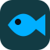

<!doctype html><html lang="zh-CN"><meta charset="utf-8"><meta name="viewport" content="width=device-width,initial-scale=1"><title>大肥鱼 API 模型终端</title>
<style>
:root{color-scheme:dark;--bg:#0b0f14;--panel:#11161e;--card:#191f29;--line:#272f3d;--text:#e4e9f2;--muted:#778397;--blue:#009fff}*{box-sizing:border-box}body{margin:0;background:var(--bg);color:var(--text);font:13px "Segoe UI","Microsoft YaHei",sans-serif}aside{position:fixed;width:232px;inset:0 auto 0 0;background:var(--panel);border-right:1px solid var(--line);padding:20px 14px}h1,h2,h3,p{margin:0}h1{font-size:16px}h2{font-size:18px}h3{font-size:13px}p{line-height:1.8;margin:8px 0}small,.muted{font-size:11px;color:var(--muted)}button,input,select,textarea{font:inherit}button{background:#1b2330;color:#9caac0;border:1px solid var(--line);padding:8px 12px;border-radius:6px;cursor:pointer}button:hover{border-color:var(--blue);color:var(--text)}button:disabled{opacity:.45;cursor:not-allowed}.primary{background:var(--blue);border-color:var(--blue);color:#001727;font-weight:600}.danger{background:#3c1b25;color:#ff536b;border-color:#542332}.brand{display:flex;gap:10px;align-items:center;padding:0 4px 14px;border-bottom:1px solid var(--line)}.logo{display:grid;place-items:center;border:1px solid var(--blue);border-radius:10px;width:34px;height:34px;color:var(--blue);background:#123b43;font-size:22px}.brand strong{display:block;font-size:14px}.brand small{font-size:10px;letter-spacing:1px}nav{margin:12px 0 20px}nav button{display:block;width:100%;text-align:left;border:0;background:none;margin:4px 0;padding:12px}nav button.active{background:#193e34;color:var(--blue);font-weight:600;border-right:2px solid var(--blue)}.sidebar-status{border-top:1px solid var(--line);padding-top:16px}.mini{background:var(--card);border-radius:9px;padding:13px;margin:10px 0 24px}.mini p{display:flex;justify-content:space-between;font-size:11px;color:var(--muted)}main{margin-left:232px}header{height:62px;border-bottom:1px solid var(--line);padding:12px 28px;display:flex;justify-content:space-between;align-items:center}.header-tools{display:flex;gap:8px;align-items:center}#search{width:190px;margin:0;padding:7px 10px}.badge{display:inline-block;padding:4px 8px;background:#193b32;color:#00b0ff;border-radius:4px;font-size:11px}.bad{background:#3d1c26;color:#ff526d}.neutral{background:#222b39;color:#92a0b6}#notice{color:#ffbb48;margin:10px 28px}#notice:empty{display:none}#content{padding:22px 28px}.cards{display:grid;grid-template-columns:repeat(4,1fr);gap:12px;margin-bottom:16px}.card,.panel{border:1px solid var(--line);border-radius:12px;background:var(--panel);padding:18px;margin-bottom:16px}.cards .card{background:var(--card);margin:0;min-height:100px}.value{font:600 24px Consolas,monospace;margin:10px 0}.toolbar,.row{display:flex;gap:8px;align-items:center}.toolbar{margin-bottom:16px;flex-wrap:wrap}.spread{justify-content:space-between}.layout{display:grid;grid-template-columns:minmax(0,2.3fr) minmax(280px,1fr);gap:16px}.port-grid{display:grid;grid-template-columns:repeat(3,minmax(0,1fr));gap:12px;margin-top:16px}.port-card{background:var(--card);border:1px solid var(--line);border-radius:10px;padding:16px;min-height:145px}.port-card.current{border-color:var(--blue);background:#142723}.port-card strong{font-size:14px}.port-card p{overflow-wrap:anywhere}.port-id{display:inline-block;padding:7px;background:#232d3a;color:#97a7bb;border-radius:5px;font:12px Consolas,monospace}.current .port-id{color:var(--blue);background:#164137}.line{height:4px;background:#27303e;border-radius:8px;margin:12px 0}.active-port{padding:18px 0;display:flex;gap:16px;align-items:center}.active-port .port-id{font-size:21px;border:1px solid var(--blue);padding:16px;color:var(--blue)}.active-port h2{margin-bottom:6px}.truncate{overflow-wrap:anywhere;min-width:0}.metrics{display:flex;gap:30px;border-top:1px solid var(--line);padding-top:12px}.event{display:flex;gap:18px;padding:14px 0;border-bottom:1px solid #202735}.event:last-child{border:0}.table-wrap{overflow:auto;padding:0}table{border-collapse:collapse;width:100%;white-space:nowrap}th{background:#0e131b;color:var(--muted);font-weight:400;font-size:11px}td,th{text-align:left;padding:14px 12px;border-bottom:1px solid #222a36}td small{display:block;margin-top:4px}.endpoint{max-width:300px;overflow:hidden;text-overflow:ellipsis;font:11px Consolas,monospace;color:#8796ad}.table-head,.table-foot{padding:12px;background:var(--card)}.table-head{display:flex;gap:18px;align-items:center}.table-head .danger{margin-left:auto}.table-foot{color:var(--muted);font-size:11px}.empty{text-align:center;padding:48px;color:var(--muted)}label{display:block;margin:12px 0}input:not([type=checkbox]),select,textarea{width:100%;background:#191f29;border:1px solid var(--line);border-radius:6px;padding:10px;color:var(--text);margin-top:6px}input[type=checkbox]{accent-color:var(--blue)}input[type=checkbox].switch{appearance:none;width:40px;height:22px;border-radius:20px;background:#303a4b;position:relative;cursor:pointer;flex-shrink:0}input[type=checkbox].switch:before{content:"";position:absolute;width:16px;height:16px;top:3px;left:3px;border-radius:50%;background:#8995a8}input[type=checkbox].switch:checked{background:var(--blue)}input[type=checkbox].switch:checked:before{left:21px;background:#123b43}.setting{display:flex;align-items:center;justify-content:space-between;padding:22px 0;border-bottom:1px solid #242c38;gap:20px}.setting:last-child{border:0;padding-bottom:6px}.summary{display:flex;justify-content:space-between;margin:15px 0;color:var(--muted);gap:20px}.summary b{color:var(--text);font-weight:400}.about{min-height:calc(100vh - 150px);display:grid;place-items:center}.about .panel{width:min(520px,100%);text-align:center;padding:40px 35px}.about .logo{width:64px;height:64px;font-size:35px;margin:0 auto 20px;border-radius:17px}.about h2{font-size:23px}.construction{padding:26px;margin:22px 0;border:1px dashed var(--line);background:#0e131b;border-radius:9px}.construction h3{color:#ffbf39}.priority-row{display:flex;align-items:center;gap:12px}.priority-row input{width:80px;margin-left:auto}dialog{background:var(--panel);color:var(--text);border:1px solid var(--line);border-radius:14px;width:530px;max-width:95vw;padding:26px}dialog::backdrop{background:#0009}#reply,#routeReply{white-space:pre-wrap;overflow-wrap:anywhere;margin-top:16px}#reply:empty,#routeReply:empty{display:none}@media(max-width:1100px){.port-grid{grid-template-columns:repeat(2,1fr)}.layout{grid-template-columns:1fr}.header-tools .badge{display:none}}@media(max-width:750px){aside{position:static;width:auto}.sidebar-status{display:none}nav{display:flex;margin:5px 0}nav button{padding:10px 5px}main{margin:0}header{padding:12px}#content{padding:16px}.cards{grid-template-columns:repeat(2,1fr)}.port-grid{grid-template-columns:1fr}.header-tools{display:none}.active-port{flex-wrap:wrap}}

/* Motion: short compositor-friendly transitions; no persistent decorative loops. */
button{transition:background-color .16s ease,border-color .16s ease,color .16s ease,transform .12s ease,box-shadow .16s ease}
button:not(:disabled):active{transform:scale(.97)}
button.primary:not(:disabled):hover{background:#28b0ff;box-shadow:0 4px 16px #009fff24}
button:focus-visible{outline:2px solid #47bdff;outline-offset:3px}
input:focus-visible,select:focus-visible,textarea:focus-visible{outline:none;border-color:#47bdff}
nav button{position:relative;transition:background-color .18s ease,color .18s ease}
.port-card,.cards .card{transition:transform .2s ease,border-color .2s ease,box-shadow .2s ease}
@media(hover:hover){.port-card:hover,.cards .card:hover{transform:translateY(-3px);border-color:#3b566b;box-shadow:0 8px 22px #0002}.port-card.current:hover{border-color:var(--blue)}}
tbody tr{transition:background-color .15s ease}tbody tr:hover{background:#16222e}tbody tr:has(input:checked){background:#122b37}
input:not([type=checkbox]),select,textarea{transition:border-color .16s ease,box-shadow .16s ease}
input:focus,select:focus,textarea:focus{border-color:#009fff;box-shadow:none}
input[type=checkbox].switch{transition:background-color .18s ease}
input[type=checkbox].switch:before{left:3px!important;transition:transform .18s cubic-bezier(.2,.8,.2,1),background-color .18s ease}
input[type=checkbox].switch:checked:before{transform:translateX(18px)}
#content.page-enter{animation:page-in .24s ease-out both}
#content.page-enter .port-card,#content.page-enter .cards .card{animation:card-in .28s ease-out both}
#content.page-enter .card:nth-child(2),#content.page-enter .port-card:nth-child(2){animation-delay:30ms}
#content.page-enter .card:nth-child(3),#content.page-enter .port-card:nth-child(3){animation-delay:60ms}
#content.page-enter .card:nth-child(4),#content.page-enter .port-card:nth-child(n+4){animation-delay:90ms}
dialog[open]{animation:dialog-fade .16s ease-out both;transform:none}
dialog[open]::backdrop{animation:none}
#notice{position:fixed;z-index:100;right:26px;bottom:20px;max-width:min(520px,calc(100vw - 32px));margin:0;padding:12px 18px;border:1px solid #4f452c;border-radius:9px;background:#20201c;box-shadow:0 8px 30px #0004;animation:card-in .18s ease-out}
#notice.loading{border-color:#245272;background:#112735;color:#9edcff}
#notice.loading:before{content:"";display:inline-block;width:12px;height:12px;border:2px solid #3d6881;border-top-color:#42bdff;border-radius:50%;margin-right:10px;vertical-align:-2px;animation:spin .8s linear infinite}
body.is-busy{cursor:progress}#content[aria-busy=true]{opacity:.94;transition:opacity .15s ease}
@keyframes page-in{from{opacity:0;transform:translateY(7px)}to{opacity:1;transform:translateY(0)}}
@keyframes card-in{from{opacity:0;transform:translateY(5px)}to{opacity:1;transform:translateY(0)}}
@keyframes dialog-fade{from{opacity:0}to{opacity:1}}
@keyframes veil-in{from{opacity:0}to{opacity:1}}@keyframes spin{to{transform:rotate(360deg)}}
@media(prefers-reduced-motion:reduce){*,*::before,*::after{animation:none!important;transition:none!important;scroll-behavior:auto!important}.port-card:hover,.cards .card:hover,button:not(:disabled):active{transform:none}}
.logo{overflow:hidden;flex-shrink:0;background:#f9f8f6}.logo img{display:block;width:100%;height:100%;object-fit:contain}.about .logo{width:96px;height:96px}

/* About: isolated decorative layers, no pointer capture or remote assets. */
.about{position:relative;isolation:isolate;overflow:hidden;border-radius:18px;background:radial-gradient(ellipse at 50% 45%,#102a4855,transparent 68%)}
.about::before{content:"";position:absolute;z-index:-2;inset:0;pointer-events:none;background-image:linear-gradient(#148ddd12 1px,transparent 1px),linear-gradient(90deg,#148ddd12 1px,transparent 1px);background-size:44px 44px;mask-image:radial-gradient(ellipse at center,#000 15%,transparent 78%)}
.about::after{content:"";position:absolute;z-index:-1;width:560px;height:560px;max-width:95%;border-radius:50%;pointer-events:none;background:radial-gradient(circle,#009fff22 0%,#6552ff16 38%,transparent 68%);animation:ai-glow 12s ease-in-out infinite alternate}
.ai-scene{position:absolute;inset:0;z-index:-1;overflow:hidden;pointer-events:none}
.ai-orbit{position:absolute;left:50%;top:50%;width:660px;height:660px;border:1px solid #29b6ff22;border-radius:50%;transform:translate(-50%,-50%)}
.ai-orbit::before,.ai-orbit::after{content:"";position:absolute;width:6px;height:6px;background:#4ccaff;border-radius:50%;box-shadow:0 0 14px #20acff;left:50%;top:-3px}
.ai-orbit::after{top:auto;bottom:-3px;background:#8c83ff}
.ai-orbit.inner{width:550px;height:550px;border-style:dashed;border-color:#798bff25}
.ai-scan{position:absolute;inset:0;background:linear-gradient(transparent 48%,#00b8ff0b 49.5%,#36baff30 50%,transparent 50.3%);transform:translateY(-55%);animation:ai-scan 14s linear infinite}
.ai-node{position:absolute;width:3px;height:3px;border-radius:50%;background:#69ceff;box-shadow:0 0 10px #38b7ff;opacity:.45;animation:ai-node 5s ease-in-out infinite alternate}
.ai-node:nth-of-type(4){left:14%;top:26%}.ai-node:nth-of-type(5){left:83%;top:28%;animation-delay:-2s}.ai-node:nth-of-type(6){left:21%;top:74%;animation-delay:-3s}.ai-node:nth-of-type(7){left:77%;top:69%;animation-delay:-1s}
.about .panel{position:relative;background:linear-gradient(145deg,#142135f5,#101620f5);border-color:#2b506c;box-shadow:0 20px 70px #0005,0 0 35px #009fff0a}
.about .panel::before{content:"";position:absolute;top:-1px;left:22%;right:22%;height:1px;background:linear-gradient(90deg,transparent,#52caff,transparent);pointer-events:none}
.about .construction{background:#0c1522c9;border-color:#29415b}.about .logo{box-shadow:0 0 24px #009fff28}
@keyframes ai-glow{from{transform:translate(-35px,-20px) scale(.95);opacity:.6}to{transform:translate(35px,20px) scale(1.1);opacity:1}}
@keyframes ai-scan{from{transform:translateY(-55%)}to{transform:translateY(55%)}}
@keyframes ai-node{from{opacity:.25;transform:translateY(0)}to{opacity:.7;transform:translateY(-7px)}}
@media(prefers-reduced-motion:reduce){.about::after,.ai-scan,.ai-node{animation:none!important}.ai-scan{display:none}}

/* High-energy AI scene, confined to About. */
.about{background:radial-gradient(ellipse at 50% 45%,#072b57 0%,#080d27 46%,#030712 100%);min-height:calc(100vh - 125px)}
.about::before{opacity:.75;background-size:32px 32px;transform:perspective(500px) rotateX(48deg) scale(1.5);transform-origin:center bottom;mask-image:linear-gradient(transparent 5%,black 80%)}
.about::after{width:800px;height:800px;max-width:none;background:conic-gradient(from 45deg,transparent,#008cff44,transparent,#9b35ff44,transparent,#00f5ff33,transparent);animation:reactor-spin 22s linear infinite;filter:blur(24px)}
.ai-scene{z-index:-1}.ai-orbit{width:760px;height:760px;border:2px solid #00cfff66;box-shadow:0 0 24px #00baff22,inset 0 0 24px #00baff12;animation:orbit-spin 18s linear infinite}
.ai-orbit.inner{width:640px;height:640px;border:3px dashed #9265ff88;animation:orbit-spin 28s linear infinite reverse;box-shadow:0 0 30px #8658ff33}
.ai-orbit::before,.ai-orbit::after{width:9px;height:9px;box-shadow:0 0 14px #5deaff,0 0 35px #00baff}
.ai-scan{background:linear-gradient(transparent 47%,#00dbff0a 49%,#00d9ff99 50%,#00dbff0a 51%,transparent 53%);animation-duration:6s}
.about .panel{z-index:2;border:1px solid #38dfffaa;background:linear-gradient(135deg,#08172aee,#10112bee);box-shadow:0 0 0 5px #00cfff08,0 0 40px #00cfff30,0 30px 90px #000b;backdrop-filter:blur(10px)}
.about .panel::before{left:8%;right:8%;height:2px;background:linear-gradient(90deg,transparent,#12dbff,#a689ff,transparent);box-shadow:0 0 20px #00cfff;animation:edge-pulse 2.8s ease-in-out infinite alternate}
.about .panel::after{content:"AI VISUAL / LOCAL";position:absolute;left:20px;top:13px;color:#4ee4ff;font:9px Consolas,monospace;letter-spacing:2px;opacity:.7}
.about .logo{box-shadow:0 0 25px #00cfff55,0 0 65px #7061ff44;border:2px solid #4ee4ff}
.about h2{text-shadow:0 0 22px #24caff88}.about .construction{border-color:#368aa466;box-shadow:inset 0 0 28px #008cff12}
.ai-canvas{position:absolute;inset:0;width:100%;height:100%;z-index:0;pointer-events:none}
@keyframes orbit-spin{from{transform:translate(-50%,-50%) rotate(0)}to{transform:translate(-50%,-50%) rotate(360deg)}}
@keyframes reactor-spin{from{transform:rotate(0)}to{transform:rotate(360deg)}}
@keyframes edge-pulse{from{opacity:.45}to{opacity:1}}
@media(max-width:750px){.ai-orbit{width:580px;height:580px}.ai-orbit.inner{width:470px;height:470px}}
@media(prefers-reduced-motion:reduce){.about::after,.ai-orbit,.about .panel::before{animation:none!important}}
</style><aside><div class="brand"><div class="logo"></div><div><strong>大肥鱼 API</strong><small>MODEL TERMINAL PRO 1.0</small></div></div><small>工作台</small><nav id="nav"></nav><div class="sidebar-status"><small>运行状态</small><div class="mini"><strong>● QQ 大肥鱼 · 未接入</strong><p>本地终端 <span>127.0.0.1:8765</span></p><p>连接方式 <span>本地运行</span></p></div><strong>本地项目 · 管理员</strong><p class="muted">密钥仅保存在本次运行内存</p></div></aside><main><header><div><small id="crumb">工作台 / 终端首页</small><h1 id="title"></h1></div><div class="header-tools"><span class="badge neutral">● 本地服务</span><input id="search" placeholder="搜索端口 / 模型" aria-label="搜索端口或模型" oninput="query=this.value;render()"><button onclick="checkAll()" title="刷新端口状态">⟳</button></div></header><div id="notice" role="status"></div><section id="content"></section></main>
<dialog id="editor"><form id="form"><h2>模型端口配置</h2><input name="id" type="hidden"><label>端口名称<input name="name" required placeholder="例如：DeepSeek 主端口"></label><label>协议<select name="protocol"><option value="deepseek">DeepSeek</option><option value="openai">OpenAI 兼容</option></select></label><label>API 基础地址<input name="url" required type="url" placeholder="https://api.deepseek.com"></label><label>API 密钥<input name="key" type="password" autocomplete="new-password" placeholder="仅存内存；留空保留当前密钥"></label><label>模型名称<input name="model" placeholder="填写服务商提供的模型 ID"></label><p class="muted">OpenAI 兼容地址请包含服务商要求的 /v1。密钥重启后需重新填写；更换地址会清除原密钥。</p><div class="toolbar"><button class="primary">保存端口</button><button type="button" onclick="editor.close()">取消</button></div></form></dialog>
<script>
let query='',state={ports:[],config:{}},page='终端首页',selected=new Set(),selection=false;
const $=s=>document.querySelector(s),esc=s=>String(s??'').replace(/[&<>"']/g,c=>({'&':'&amp;','<':'&lt;','>':'&gt;','"':'&quot;',"'":'&#39;'}[c]));
let pendingRequests=0;
async function api(path,body){
 pendingRequests++;document.body.classList.add('is-busy');$('#content').setAttribute('aria-busy','true');$('#notice').classList.add('loading');$('#notice').textContent=path==='send'||path==='chat'?'模型正在回复，请稍候…':path==='check'?'正在检测端口…':'正在保存与同步…';
 try{const r=await fetch('/api/'+path,{method:body?'POST':'GET',headers:{'Content-Type':'application/json','X-Local-Token':'__TOKEN__'},body:body?JSON.stringify(body):undefined});const data=await r.json();if(!r.ok)throw Error(data.error);$('#notice').textContent='';return data}
 catch(e){$('#notice').textContent=e.message;throw e}
 finally{pendingRequests--;if(!pendingRequests){document.body.classList.remove('is-busy');$('#content').setAttribute('aria-busy','false');$('#notice').classList.remove('loading')}}
}

function balances(p){return p.balance?.length?p.balance.map(b=>esc(b.currency)+' '+esc(b.total_balance)).join(' / '):p.balanceError?esc(p.balanceError):p.protocol==='deepseek'?'尚未查询':'暂不支持查询'}
const names=['终端首页','模型端口','模型配置','关于我们','运行日志'];
const pid=p=>'P'+(state.ports.indexOf(p)+1);
const good=p=>p.hasKey&&p.status==='接口可达';
const badge=p=>`<span class="badge ${good(p)?'':/失败|不可用/.test(p.status)?'bad':'neutral'}">● ${esc(p.hasKey?p.status:'待填密钥')}</span>`;
const ordered=()=>[...state.ports].sort((a,b)=>(a.priority||100)-(b.priority||100));
const active=()=>state.ports.find(p=>p.id===state.activePort);
let lastRenderedPage=null;
function render(){
 const pageChanged=lastRenderedPage!==page;lastRenderedPage=page;
 const content=$('#content');content.classList.remove('page-enter');
 if(pageChanged){void content.offsetWidth;content.classList.add('page-enter')}
 $('#title').textContent=page;$('#crumb').textContent='工作台 / '+page;
 $('#nav').innerHTML=names.map((n,i)=>`<button class="${page===n?'active':''}" onclick="go(${i})">${['▦','⚒','☷','ⓘ','▤'][i]}　${n}</button>`).join('');
 const ports=state.ports.filter(p=>(p.name+' '+p.model+' '+p.url).toLowerCase().includes(query.toLowerCase())),p=active();
 if(page===names[0])$('#content').innerHTML=`<div class="cards"><div class="card"><small>当前端口剩余额度</small><div class="value" style="font-size:20px">${p?balances(p):'—'}</div><small>账户级余额 · 不重复合计</small></div><div class="card"><small>接口可达</small><div class="value">${state.ports.filter(good).length} <small>/ ${state.ports.length}</small></div><small>以最近检测或调用结果为准</small></div><div class="card"><small>本工具累计 Token</small><div class="value">${state.ports.reduce((a,p)=>a+(p.tokens||0),0).toLocaleString()}</div><small>不含其他客户端用量</small></div><div class="card"><small>QQ 大肥鱼</small><div class="value">未接入</div><small>等待消息与语音接口</small></div></div><div class="layout"><div class="panel"><div class="row spread"><small>当前使用端口</small>${p?badge(p):''}</div><div class="active-port"><span class="port-id">${p?pid(p):'—'}</span><div class="truncate" style="flex:1"><h2>${esc(p?.name||'尚未添加端口')}</h2><small>${esc(p?.url||'前往模型端口，添加您的第一个 API')}</small></div><button class="primary" onclick="switchDialog()">⇄ 切换端口</button><button onclick="${p?`check('${p.id}')`:'go(1)'}">连通测试</button></div><div class="metrics"><div><small>本端口额度</small><p>${p?balances(p):'—'}</p></div><div><small>累计 Token</small><p>${p?.tokens||0}</p></div><div><small>模型</small><p>${esc(p?.model||'未设置')}</p></div></div><button class="primary" onclick="sendCurrent()" ${p?'':'disabled'}>使用当前端口对话</button><div id="routeReply"></div></div><div class="panel"><div class="row spread"><h3>ϟ 优先权使用端口</h3><input aria-label="自动切换" class="switch" type="checkbox" ${state.autoSwitch?'checked':''} onchange="routing({autoSwitch:this.checked})"></div><p class="muted">当前端口调用失败、额度不足或不可用时，自动按优先级尝试下一个端口。</p><div class="line"></div><small>优先权顺序 · 数字越小越优先</small><p>${ordered().map(p=>`<span class="port-id">${pid(p)}</span>`).join(' → ')||'暂无端口'}</p><button onclick="priorityDialog()">调整优先权</button><p class="muted">请求失败时切换；暂无余额百分比阈值。超时重试可能重复计费。</p></div></div><div class="panel"><div class="row spread"><h3>模型端口状态 <small>${ports.length} 个</small></h3><button onclick="go(1)">管理端口 →</button></div><div class="port-grid">${ports.map(p=>`<div class="port-card ${p.id===state.activePort?'current':''}"><div class="row spread"><div class="row"><span class="port-id">${pid(p)}</span><strong>${esc(p.name)}</strong></div>${badge(p)}</div><p class="muted">${esc(p.model||'未设置模型')} · ${esc(p.protocol)}</p><div class="row spread"><small>剩余额度</small><small>${balances(p)}</small></div><div class="line"></div><div class="row spread"><small>${p.tokens||0} Token</small>${p.id===state.activePort?'<span class="badge">● 当前使用</span>':`<button onclick="routing({activePort:'${p.id}'})">切换 →</button>`}</div></div>`).join('')||'<div class="empty">暂无端口，添加 API 后显示真实状态。</div>'}</div></div><div class="panel"><h3>最近调用与切换记录</h3>${(state.lastRoute||[]).map(r=>`<div class="event"><span style="color:var(--blue)">●</span><strong>${esc(r.name)}</strong><small>${esc(r.result)}</small></div>`).join('')||'<p class="muted">暂无记录。首页对话后会显示端口尝试结果。</p>'}</div>`;
 if(page===names[1])$('#content').innerHTML=`<div class="toolbar spread"><div><h2>API 端口列表</h2><p class="muted">管理模型 API 端口，支持批量删除、端口切换与优先权排序。</p></div><button class="primary" onclick="edit()">＋ 新增 API</button></div><div class="panel table-wrap"><div class="table-head"><label><input type="checkbox" aria-label="全选端口" ${ports.length&&ports.every(p=>selected.has(p.id))?'checked':''} onchange="portsSelect(this.checked)"> 全选</label><button onclick="preselect()">预选可用端口</button><span class="badge">已选 ${selected.size} 项</span><button class="danger" onclick="removeSelected()">批量删除</button><button onclick="priorityDialog()">⇅ 优先权排序</button></div><table><thead><tr><th></th><th>端口</th><th>模型名称</th><th>接口地址</th><th>剩余额度</th><th>状态</th><th>操作</th></tr></thead><tbody>${ports.map(p=>`<tr><td><input aria-label="选择 ${esc(p.name)}" type="checkbox" ${selected.has(p.id)?'checked':''} onchange="toggle('${p.id}',this.checked)"></td><td><span class="port-id">${pid(p)}</span></td><td><strong>${esc(p.name)}</strong><small>${p.hasKey?'密钥已配置':'待填写密钥'} · ${esc(p.model||'未设模型')}</small></td><td class="endpoint" title="${esc(p.url)}">${esc(p.url)}</td><td>${balances(p)}</td><td>${badge(p)}</td><td><button onclick="edit('${p.id}')">编辑</button> <button onclick="chat('${p.id}')">测试</button> <button class="danger" onclick="remove(['${p.id}'])">删除</button></td></tr>`).join('')||'<tr><td colspan="7" class="empty">暂无端口，点击右上角新增 API。</td></tr>'}</tbody></table><div class="table-foot">共 ${state.ports.length} 个 API 端口 · 当前显示 ${ports.length} 个</div></div><div class="cards" style="grid-template-columns:repeat(3,1fr)"><div class="card">${state.ports.filter(good).length} 个接口可达<p class="muted">最近调用或检测成功</p></div><div class="card">${state.ports.filter(p=>/失败|不可用/.test(p.status)).length} 个异常端口<p class="muted">请检查额度、网络与密钥</p></div><div class="card">${state.ports.filter(p=>!p.hasKey).length} 个待填密钥<p class="muted">重启后需重新填写</p></div></div><div class="panel row spread" style="border-style:dashed"><div><h3>还有更多模型需要接入？</h3><p class="muted">支持 DeepSeek 与 OpenAI 兼容协议。</p></div><button class="primary" onclick="edit()">＋ 新增 API</button></div><div id="reply" class="panel" hidden></div>`;
 if(page===names[2])$('#content').innerHTML=`<div class="toolbar spread"><div><h2>模型配置</h2><p class="muted">管理桌宠与 QQ 大肥鱼联动偏好。接口尚未接入，开关暂仅保存配置。</p></div><button onclick="resetConfig()">↶ 恢复默认</button></div><div class="layout"><div><div class="panel"><h3>♧ 桌宠对接</h3>${setting('pet','对接桌宠开关','保存桌宠联动偏好，等待桌宠接口接入。')}</div><div class="panel"><h3>◖ 语音输出</h3>${setting('qqVoice','QQ 大肥鱼语音开关','保存 QQ 语音回复偏好，目前不会发送语音。')}${setting('petVoice','桌宠语音开关','保存桌宠语音偏好，目前不会播放语音。')}</div><div class="panel"><h3>☷ 高级选项</h3><div class="setting"><div>所有端口失败后停止重试<p class="muted">每次请求各端口最多尝试一次，全部失败返回提示。</p></div><span class="badge">已启用</span></div><div class="setting"><div>调用记录<p class="muted">首页保留最近一次调用的端口尝试结果，不保存对话内容。</p></div><span class="badge">已启用</span></div></div></div><div><div class="panel"><h3>当前配置摘要 <span class="badge">已保存</span></h3><div class="summary">模型端口<b>${esc(p?.name||'未选择')}</b></div><div class="summary">优先权切换<b>${state.autoSwitch?'已开启':'已关闭'}</b></div>${[['pet','对接桌宠'],['qqVoice','QQ 语音'],['petVoice','桌宠语音']].map(([k,n])=>`<div class="summary">${n}<b>${state.config[k]?'偏好已开启':'已关闭'}</b></div>`).join('')}<small>修改开关后自动保存到本地。</small></div><div class="panel"><h3>桌宠语音预览</h3><div class="mini"><p>大肥鱼 · 语音服务未接入</p><div class="value" style="color:var(--blue)">▂ ▄ ▆ ▃ ▇ ▄ ▂ ▅ ▃</div><button disabled>试听 · 待接入</button></div><small>等待桌宠语音协议，暂不提供模拟试听。</small></div></div></div>`;
 if(page===names[3])$('#content').innerHTML=`<div class="about"><canvas class="ai-canvas" aria-hidden="true"></canvas><div class="ai-scene" aria-hidden="true"><span class="ai-orbit"></span><span class="ai-orbit inner"></span><span class="ai-scan"></span><i class="ai-node"></i><i class="ai-node"></i><i class="ai-node"></i><i class="ai-node"></i></div><div class="panel"><div class="logo"></div><h2>大肥鱼 API 模型终端</h2><p class="muted">LOCAL TERMINAL · v0.4.0</p><div style="width:40px;height:2px;background:var(--blue);margin:18px auto"></div><div class="construction"><h3>⚒ 暂未开发</h3><p class="muted">关于页面正在建设中，团队介绍与版本说明将在后续更新中提供。</p></div><span class="badge neutral">本地项目</span> <span class="badge neutral">QQ 大肥鱼 · 待接入</span> <span class="badge neutral">本地运行</span></div></div>`;
}
function setting(k,n,d){return `<div class="setting"><div><strong>${n}</strong><p class="muted">${d}</p></div><input aria-label="${n}" class="switch" type="checkbox" ${state.config[k]?'checked':''} onchange="config('${k}',this.checked)"></div>`}
function portsSelect(v){state.ports.filter(p=>(p.name+' '+p.model+' '+p.url).toLowerCase().includes(query.toLowerCase())).forEach(p=>v?selected.add(p.id):selected.delete(p.id));render()}
function preselect(){selected=new Set(state.ports.filter(good).map(p=>p.id));render()}
async function resetConfig(){if(!confirm('恢复桌宠与语音偏好为关闭状态？'))return;try{state=await api('config',{pet:false,qqVoice:false,petVoice:false});render()}catch{}}
function openSingleDialog(dialog){document.querySelectorAll('dialog[open]').forEach(other=>{if(other!==dialog)other.close()});if(!dialog.open)dialog.showModal()}
function modal(html){let d=$('#routingDialog');if(!d){d=document.createElement('dialog');d.id='routingDialog';document.body.append(d)}d.innerHTML=html+'<p><button onclick="this.closest(\'dialog\').close()">关闭</button></p>';openSingleDialog(d)}
function switchDialog(){modal(`<h2>切换当前端口</h2><p class="muted">选择后，首页对话优先使用该端口。</p>${state.ports.map(p=>`<p><button onclick="routing({activePort:'${p.id}'});this.closest('dialog').close()">${pid(p)} · ${esc(p.name)} ${p.id===state.activePort?'✓':''}</button></p>`).join('')||'<p>请先到模型端口新增 API。</p>'}`)}
function priorityDialog(){modal(`<h2>端口优先权排序</h2><p class="muted">数字越小越优先；同数字按添加顺序。修改后自动保存。</p>${ordered().map(p=>`<label class="priority-row">${pid(p)} · ${esc(p.name)}<input aria-label="${esc(p.name)} 优先级" type="number" min="1" max="999" value="${p.priority||100}" onchange="routing({id:'${p.id}',priority:Number(this.value)})"></label>`).join('')||'<p>暂无端口</p>'}`)}

async function routing(body){try{state=await api('routing',body);render()}catch{render()}}
async function sendCurrent(){const message=prompt('输入消息（会调用 API，可能计费）');if(!message)return;let result,error;try{result=await api('send',{message})}catch(e){error=e.message}try{state=await api('state');render();if(result&&$('#routeReply'))$('#routeReply').textContent=`实际使用：${result.portName} — ${result.reply}`;if(error)$('#notice').textContent=error}catch{}}
function go(i){const next=names[i];if(page===next)return;page=next;render();if(page===names[4])loadLogs()}
function edit(id){$('#form').reset();const p=state.ports.find(p=>p.id===id)||{url:'https://api.deepseek.com',protocol:'deepseek'};for(const k of ['id','name','url','protocol','model'])$('#form').elements[k].value=p[k]||'';openSingleDialog($('#editor'))}
$('#form').onsubmit=async e=>{e.preventDefault();try{state=await api('port',Object.fromEntries(new FormData(e.target)));e.target.reset();$('#editor').close();render()}catch{}};
function toggle(id,v){v?selected.add(id):selected.delete(id);render()}
async function remove(ids){if(!ids.length||!confirm(`确认删除 ${ids.length} 个端口？`))return;try{state=await api('delete',{ids});selected.clear();render()}catch{}}
function removeSelected(){remove([...selected])}
async function check(id){try{state=await api('check',{id});render()}catch{}}
async function checkAll(){for(const p of [...state.ports])await check(p.id)}
async function config(k,v){try{state=await api('config',{...state.config,[k]:v});render()}catch{render()}}
async function chat(id){const message=prompt('输入测试消息（将调用 API，可能产生费用）');if(!message)return;try{const r=await api('chat',{id,message});state=await api('state');render();if($('#reply')){$('#reply').hidden=false;$('#reply').textContent=r.reply||'模型未返回文本';}}catch{}}
let voiceBusy=false,voiceUrls=[],pendingVoices={};
const baseRender=render;
render=function(){voiceUrls.forEach(u=>URL.revokeObjectURL(u));voiceUrls=[];baseRender();if(page===names[4]){renderLogs();return}if(page!==names[2])return;$('#content').insertAdjacentHTML('beforeend',`<div class="panel"><h2>本地音色参考音频</h2><p class="muted">上传不超过 15 分钟的音频，分别用于 QQ 大肥鱼与桌宠的定制音色参考。文件仅保存在本机；尚未接入音色克隆服务，上传不会立即生成定制语音。</p><p class="muted">支持浏览器能解码的 MP3、WAV、M4A、OGG 等格式，原文件最多 100MB。保存时转换为 16kHz 单声道 WAV。请使用您有权使用的声音素材。</p><div class="layout">${['qq','pet'].map(k=>{const v=state.voices?.[k];return `<div class="card"><h3>${k==='qq'?'QQ 大肥鱼':'桌宠'} · 音色参考</h3><p>${v?esc(v.name):'尚未上传音频'}</p><p class="muted">${v?`${Math.floor(v.duration/60)} 分 ${Math.round(v.duration%60)} 秒 · 已保存到本地 · 待语音服务接入`:'建议清晰人声、安静环境、减少背景音乐'}</p><label>选择${v?'替换':''}音频<input type="file" accept="audio/*,.mp3,.wav,.m4a,.ogg,.flac" onchange="chooseVoice('${k}',this)"></label><p class="muted">${pendingVoices[k]?esc(pendingVoices[k].name)+' · 待保存':'选择后点击保存音频才会写入本地'}</p><button class="primary" onclick="uploadVoice('${k}',this)" ${!pendingVoices[k]||voiceBusy?'disabled':''}>保存音频</button> ${v?`<button onclick="previewVoice('${k}',this)">试听已保存的参考音频</button><audio id="voice-${k}" controls preload="none" style="display:none;width:100%;margin-top:14px"></audio>`:''}</div>`}).join('')}</div><p id="voiceStatus" role="status" class="muted">${voiceBusy?'正在处理音频，请等待完成…':''}</p></div>`)};
function voiceStatus(text){const el=$('#voiceStatus');if(el)el.textContent=text;else $('#notice').textContent=text}
function chooseVoice(target,input){if(voiceBusy){voiceStatus('正在保存，请稍候再选择。');return}const file=input.files[0];if(!file)return;if(file.size>100*1024*1024){input.value='';voiceStatus('文件不得超过 100MB');return}pendingVoices[target]=file;render()}
async function uploadVoice(target,input){
 const file=pendingVoices[target];if(!file)return;if(voiceBusy){input.value='';voiceStatus('已有音频正在处理，请完成后再上传。');return}
 if(file.size>100*1024*1024){input.value='';voiceStatus('文件过大，请选择不超过 100MB 的音频。');return}
 voiceBusy=true;input.disabled=true;input.textContent='保存中…';let ctx;
 try{
  voiceStatus('正在读取并检查音频时长…');
  ctx=new AudioContext();const decoded=await ctx.decodeAudioData(await file.arrayBuffer());
  if(!Number.isFinite(decoded.duration)||decoded.duration<=0||decoded.duration>900)throw Error('音频必须为 15 分钟以内，请先裁剪后重新上传。');
  voiceStatus('正在转换为语音参考格式…');
  const offline=new OfflineAudioContext(1,Math.ceil(decoded.duration*16000),16000),source=offline.createBufferSource();source.buffer=decoded;source.connect(offline.destination);source.start();
  const rendered=await offline.startRendering(),samples=rendered.getChannelData(0),buffer=new ArrayBuffer(44+samples.length*2),view=new DataView(buffer);
  const text=(offset,str)=>{for(let i=0;i<str.length;i++)view.setUint8(offset+i,str.charCodeAt(i))};
  text(0,'RIFF');view.setUint32(4,36+samples.length*2,true);text(8,'WAVE');text(12,'fmt ');view.setUint32(16,16,true);view.setUint16(20,1,true);view.setUint16(22,1,true);view.setUint32(24,16000,true);view.setUint32(28,32000,true);view.setUint16(32,2,true);view.setUint16(34,16,true);text(36,'data');view.setUint32(40,samples.length*2,true);
  for(let start=0;start<samples.length;start+=320000){for(let i=start;i<Math.min(start+320000,samples.length);i++){const v=Math.max(-1,Math.min(1,samples[i]));view.setInt16(44+i*2,v<0?v*32768:v*32767,true)}await new Promise(r=>setTimeout(r,0))}
  voiceStatus('正在保存到本地，请稍候…');
  const response=await fetch('/api/voice/'+target,{method:'POST',headers:{'X-Local-Token':'__TOKEN__','Content-Type':'audio/wav','X-Audio-Name':encodeURIComponent(file.name)},body:buffer});
  const data=await response.json();if(!response.ok)throw Error(data.error);state=data;delete pendingVoices[target];voiceBusy=false;render();voiceStatus('参考音频已保存。可以试听；定制语音生成等待音色克隆服务接入。');
 }catch(e){voiceStatus(e.name==='EncodingError'?'浏览器无法解码此音频，请转换为 MP3 或 WAV 后重试。':e.message||'音频处理失败。')}
 finally{voiceBusy=false;input.disabled=false;input.textContent='保存音频';if(ctx)await ctx.close()}
}
async function previewVoice(target,button){button.disabled=true;try{const response=await fetch('/api/voice/'+target,{headers:{'X-Local-Token':'__TOKEN__'}});if(!response.ok)throw Error('音频不存在或读取失败，请重新上传。');const blob=await response.blob();const audio=$('#voice-'+target);if(!audio)return;const url=URL.createObjectURL(blob);voiceUrls.push(url);audio.src=url;audio.style.display='block';await audio.play()}catch(e){voiceStatus(e.message)}finally{button.disabled=false}}

let logEntries=[],logLevel='ALL',logsBusy=false,logsLoaded=false,logsError='';
function renderLogs(){
 const rows=logEntries.filter(e=>logLevel==='ALL'||e.level===logLevel);
 $('#content').innerHTML=`<div class="toolbar spread"><div><h2>运行日志</h2><p class="muted">保留最近 1000 条记录，最新在前。仅查看此页时每 5 秒刷新；不记录密钥、对话内容和音频内容。</p></div><button onclick="loadLogs()" ${logsBusy?'disabled':''}>${logsBusy?'刷新中…':'刷新日志'}</button></div><div class="toolbar"><label>日志级别<select onchange="logLevel=this.value;renderLogs()">${['ALL','INFO','WARN','ERROR'].map(v=>`<option value="${v}" ${logLevel===v?'selected':''}>${{ALL:'全部',INFO:'正常',WARN:'警告',ERROR:'错误'}[v]}</option>`).join('')}</select></label><span class="badge">本地 logs/runtime.json</span></div><div class="panel table-wrap"><table><thead><tr><th>时间</th><th>级别</th><th>事件</th><th>详情</th></tr></thead><tbody>${rows.map(e=>`<tr><td>${esc(e.time)}</td><td><span class="badge ${e.level==='ERROR'?'bad':e.level==='WARN'?'neutral':''}">${esc(e.level)}</span></td><td>${esc(e.event)}</td><td style="white-space:normal">${esc(e.detail)}</td></tr>`).join('')||`<tr><td colspan="4" class="empty">${logsLoaded?'暂无匹配记录':'正在读取日志…'}</td></tr>`}</tbody></table></div><p class="muted">${esc(logsError)}</p>`;
}
async function loadLogs(){if(logsBusy)return;logsBusy=true;try{const r=await fetch('/api/logs',{headers:{'X-Local-Token':'__TOKEN__'}});if(!r.ok)throw Error('日志读取失败，请确认已重启新版服务。');const data=await r.json();logEntries=data.entries;logsLoaded=true;logsError=''}catch(e){logsError=e.message}finally{logsBusy=false;if(page===names[4])renderLogs()}}
setInterval(()=>{if(page===names[4]&&!document.hidden)loadLogs()},5000);


let stopAboutFX=()=>{};
const renderBeforeFX=render;
render=function(){stopAboutFX();renderBeforeFX();if(page===names[3])startAboutFX()};
function startAboutFX(){
 const canvas=$('.ai-canvas');if(!canvas)return;const ctx=canvas.getContext('2d');if(!ctx)return;
 const reduced=matchMedia('(prefers-reduced-motion: reduce)');let frame=0,last=0,width=1,height=1,particles=[],rain=[],disposed=false;
 function resize(){const box=canvas.getBoundingClientRect();width=box.width;height=box.height;const dpr=Math.min(devicePixelRatio||1,1.5);canvas.width=Math.round(width*dpr);canvas.height=Math.round(height*dpr);ctx.setTransform(dpr,0,0,dpr,0,0);particles=Array.from({length:width<700?38:70},()=>({x:Math.random()*width,y:Math.random()*height,vx:(Math.random()-.5)*.65,vy:(Math.random()-.5)*.65}));rain=Array.from({length:Math.ceil(width/48)},(_,i)=>({x:i*48,y:Math.random()*height,speed:1+Math.random()*1.5}));if(reduced.matches)draw(false)}
 function draw(move){ctx.clearRect(0,0,width,height);ctx.font='11px Consolas,monospace';for(const column of rain){if(move)column.y=(column.y+column.speed)%(height+100);for(let j=0;j<7;j++){ctx.fillStyle=`rgba(0,215,255,${(1-j/7)*.28})`;ctx.fillText(((Math.floor(column.x)+j)%3===0?'1':'0'),column.x,column.y-j*16)}}
 for(let i=0;i<particles.length;i++){const p=particles[i];if(move){p.x=(p.x+p.vx+width)%width;p.y=(p.y+p.vy+height)%height}for(let j=i+1;j<particles.length;j++){const q=particles[j],distance=Math.hypot(p.x-q.x,p.y-q.y);if(distance<130){ctx.strokeStyle=`rgba(38,184,255,${(1-distance/130)*.35})`;ctx.lineWidth=.7;ctx.beginPath();ctx.moveTo(p.x,p.y);ctx.lineTo(q.x,q.y);ctx.stroke()}}ctx.fillStyle=i%3?'#43d9ff':'#b18aff';ctx.shadowColor=ctx.fillStyle;ctx.shadowBlur=9;ctx.beginPath();ctx.arc(p.x,p.y,i%5===0?2.2:1.3,0,Math.PI*2);ctx.fill();ctx.shadowBlur=0}}
 function tick(now){if(disposed||document.hidden||reduced.matches)return;if(now-last>32){draw(true);last=now}frame=requestAnimationFrame(tick)}
 function resume(){cancelAnimationFrame(frame);if(reduced.matches)draw(false);else if(!document.hidden)frame=requestAnimationFrame(tick)}
 const observer=new ResizeObserver(resize);observer.observe(canvas);resize();resume();document.addEventListener('visibilitychange',resume);reduced.addEventListener('change',resume);
 stopAboutFX=()=>{disposed=true;cancelAnimationFrame(frame);observer.disconnect();document.removeEventListener('visibilitychange',resume);reduced.removeEventListener('change',resume)};
}

api('state').then(s=>{state=s;render()}).catch(()=>{});
</script></html>

<style>nav{max-height:55vh;overflow:auto}@media(max-width:750px){nav{flex-wrap:wrap}nav button{width:auto;flex:1 0 25%}}pre{user-select:text}</style><script>names.push('多轮对话','数据与工具');
let sessionId='',chatBusy=false;
const originalRenderPro=render;
render=function(){originalRenderPro();
 if(page==='多轮对话')renderConversations();
 if(page==='数据与工具')renderTools();
};
function renderConversations(){
 const sessions=state.sessions||[];let s=sessions.find(s=>s.id===sessionId)||sessions[0];sessionId=s?.id||'';
 $('#content').innerHTML=`<div class="toolbar"><button class="primary" onclick="newSession()">＋ 新建会话</button><select aria-label="会话" style="width:260px" onchange="sessionId=this.value;render()">${sessions.map(x=>`<option value="${x.id}" ${x.id===sessionId?'selected':''}>${esc(x.title)}</option>`).join('')}</select>${s?'<button onclick="exportChat()">导出 Markdown</button><button class="danger" onclick="deleteSession()">删除会话</button>':''}</div><div class="panel"><h2>多轮对话</h2><p class="muted">使用当前端口和自动故障切换；每次携带最近 20 轮上下文。请求可能计费，故障切换会把上下文发送到备用服务商。会话明文保存在本机 settings.json。</p>${s?.system?`<p>系统提示词：${esc(s.system)}</p>`:''}<div id="messages">${s?(s.messages.map(m=>`<article class="card"><strong>${m.role==='user'?'你':esc(m.port||'助手')}</strong><div style="white-space:pre-wrap;overflow-wrap:anywhere;margin-top:12px">${esc(m.content)}</div>${m.tokens!==undefined?`<p class="muted">${m.tokens} tokens</p>`:''}</article>`).join('')||'<div class="empty">开始你的第一轮对话</div>'):'<div class="empty">先新建一个会话</div>'}</div>${s?`<form onsubmit="event.preventDefault();sendConversation()"><textarea id="compose" rows="4" maxlength="12000" placeholder="输入消息，点击发送" ${chatBusy?'disabled':''}></textarea><p><button class="primary" ${chatBusy?'disabled':''}>${chatBusy?'正在等待模型…':'发送消息'}</button></p></form>`:''}</div>`;
}
async function newSession(){const system=prompt('系统提示词（可留空，例如：你是一名耐心的编程助手）','');if(system===null)return;try{state=await api('session',{system});sessionId=state.sessions.at(-1).id;render()}catch{}}
async function deleteSession(){if(chatBusy||!confirm('永久删除这个会话及其本地消息？'))return;try{state=await api('session',{id:sessionId,delete:true});sessionId='';render()}catch{}}
async function sendConversation(){if(chatBusy)return;const text=$('#compose').value;if(!text.trim())return;const id=sessionId;chatBusy=true;render();try{state=await api('converse',{id,message:text});render()}catch{if(page==='多轮对话'){$('#compose').value=text}}finally{chatBusy=false;if(page==='多轮对话'){const draft=$('#compose')?.value||'';render();$('#compose').value=draft;}}}
function downloadPro(name,text,type='application/json'){const url=URL.createObjectURL(new Blob([text],{type}));const a=document.createElement('a');a.href=url;a.download=name;a.click();setTimeout(()=>URL.revokeObjectURL(url),1000)}
function exportChat(){const s=state.sessions.find(s=>s.id===sessionId);downloadPro('会话.md','# '+s.title+'\n\n'+s.messages.map(m=>'## '+(m.role==='user'?'你':'助手')+'\n\n'+m.content).join('\n\n'),'text/markdown')}
function renderTools(){
 $('#content').innerHTML=`<div class="cards"><div class="card">端口总数<div class="value">${state.ports.length}</div></div><div class="card">本工具累计 tokens<div class="value">${state.ports.reduce((a,p)=>a+(p.tokens||0),0)}</div></div><div class="card">增强会话成功请求<div class="value">${state.ports.reduce((a,p)=>a+(p.requests||0),0)}</div></div><div class="card">已保存会话<div class="value">${(state.sessions||[]).length}</div></div></div><div class="panel"><h2>配置迁移</h2><p>导出端口名称、地址、协议、模型和优先级，不包含密钥、聊天记录或音频。导入采用追加模式，可用原版 settings.json 或本版导出文件。</p><button onclick="exportConfig()">导出配置 JSON</button><label>导入配置<input type="file" accept=".json,application/json" onchange="importConfig(this)"></label></div><div class="panel"><h2>模型与诊断</h2><p class="muted">读取模型列表和批量检测均发起真实网络请求；模型列表可达不代表生成服务可用。</p><button onclick="checkAll()">批量检测所有端口</button><div class="table-wrap"><table><thead><tr><th>端口</th><th>模型</th><th>增强会话成功 / 失败</th><th>最近耗时</th><th>操作</th></tr></thead><tbody>${state.ports.map(p=>`<tr><td>${esc(p.name)}</td><td>${esc(p.model)}</td><td>${p.requests||0} / ${p.failures||0}</td><td>${p.latencyMs===undefined?'—':p.latencyMs+' ms'}</td><td><button onclick="discoverModels('${p.id}')">读取模型列表</button></td></tr>`).join('')}</tbody></table></div></div>`;
}
async function exportConfig(){try{downloadPro('大肥鱼-端口配置.json',JSON.stringify(await api('export',{}),null,2))}catch{}}
async function importConfig(input){try{const file=input.files[0];if(!file)return;if(file.size>60000)throw Error('配置文件须小于 60KB');const data=JSON.parse(await file.text());if(!confirm('将追加导入端口，导入后请重新填写密钥。继续？'))return;state=await api('import',data);render()}catch(e){$('#notice').textContent=e.message}}
async function discoverModels(id){try{const r=await api('models',{id});modal('<h2>服务商模型列表</h2><p class="muted">复制所需模型 ID，到端口编辑框中填写。</p><pre style="white-space:pre-wrap;max-height:50vh;overflow:auto">'+esc(r.models.join('\n')||'没有返回模型')+'</pre>')}catch{}}

render();</script>